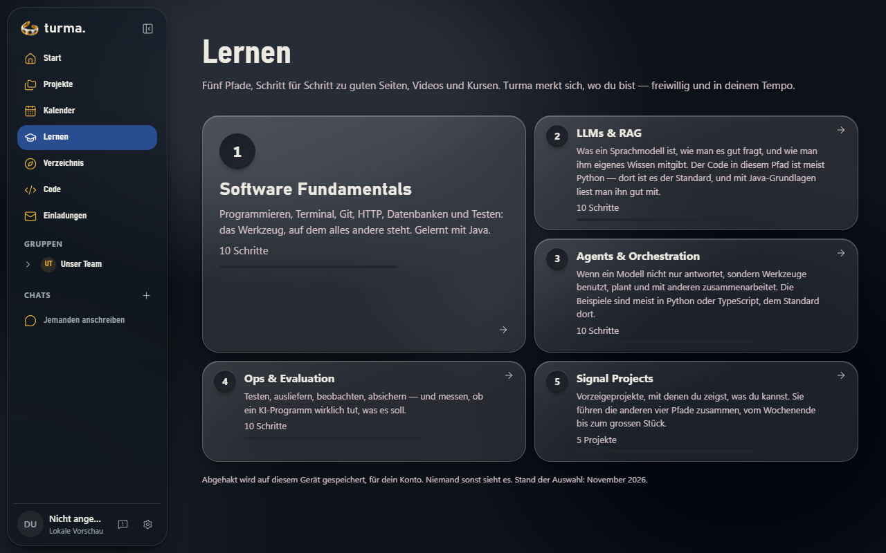

Projekte, Lernpfade und Code an einem Ort.
Eine Windows-App für kleine Gruppen. Alle sehen denselben Stand.
Installer ladenWindows · Version 2.3.1 · keine Administratorrechte nötig

Was Turma tut
Turma ist eine Windows-App für kleine Gruppen, die zusammen arbeiten. Darin liegen die Projekte einer Gruppe an einem Ort: Notizen, Aufgaben und Links, für alle sichtbar, die zur Gruppe gehören. Wer die App auf seinem Rechner installiert, sieht denselben Stand wie die anderen.
- Projekte anlegen und in einer Gruppe teilen
- Notizen, Aufgaben und Links zu einem Projekt sammeln
- Lernpfade Schritt für Schritt durchgehen
- Eigene Repos ansehen, mit dem Git-Befehl zu jedem Knopf
- Mitschüler per E-Mail-Adresse in eine Gruppe einladen
- Anmeldung per E-Mail und Passwort oder mit dem Google-Konto
- Die Windows-App hält sich selbst aktuell
Nur auf Einladung
Hier kann sich niemand selbst anmelden. Ein Konto entsteht nur für eine E-Mail-Adresse, für die vorher eine Einladung freigegeben wurde; die Datenbank weist alles andere ab. Ohne Einladung führt die App also nur zum Anmeldeformular und nicht weiter.
Erster Start
Beim ersten Start warnt Windows vor einem unbekannten Herausgeber, weil Turma nicht signiert ist. Klick auf «Weitere Informationen» und dann auf «Trotzdem ausführen».
Nach dem Installieren brauchst du einen Einladungscode. Den bekommst du von der Person, die dich einlädt — Turma ist nicht offen zugänglich. In Turma wählst du dann «Konto anlegen» und gibst den Code ein.
Was Turma nicht tut
- Keine Werbung, keine Auswertung des Verhaltens, keine Weitergabe von Daten
- Kein Zugriff auf Google Drive oder andere Dateien im Google-Konto
- Keine Video- oder Benachrichtigungsfunktionen
- Kein Dienst, der etwas kostet oder etwas verspricht — siehe die Nutzungsbedingungen
Fragen? Frag deine eigene KI
Es gibt eine Textdatei, die Turma vollständig beschreibt — wie man hineinkommt, was die einzelnen Bereiche tun, wer was sieht, und welche Macken bekannt sind. Lade sie herunter und gib sie deinem KI-Assistenten (ChatGPT, Claude, was du benutzt). Danach kannst du dort fragen statt zu suchen.
Sie ist für eine KI geschrieben, nicht zum Durchlesen — sie enthält auch die Anweisung, bei Unbekanntem ehrlich «weiss ich nicht» zu sagen, statt sich etwas auszudenken.
Wer dahinter steht
Turma ist ein privates Projekt von Fidan Abazi. Kein Unternehmen, kein kommerzielles Angebot. Fragen, Einladungen und Löschwünsche: abazifidan@gmail.com.
Turma holen
Turma gibt es als Windows-App. Einmal installieren, danach kommen Aktualisierungen von selbst. Eine Fassung für den Browser gibt es nicht mehr.
Windows-Installer herunterladen
Die EXE ist nicht signiert. Was Windows beim ersten Start meldet und wie es weitergeht, steht oben unter «Erster Start».